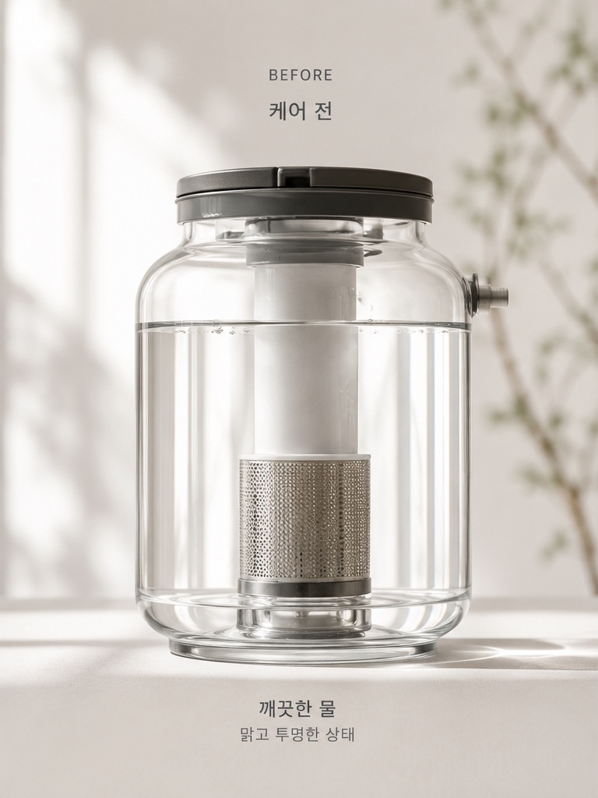
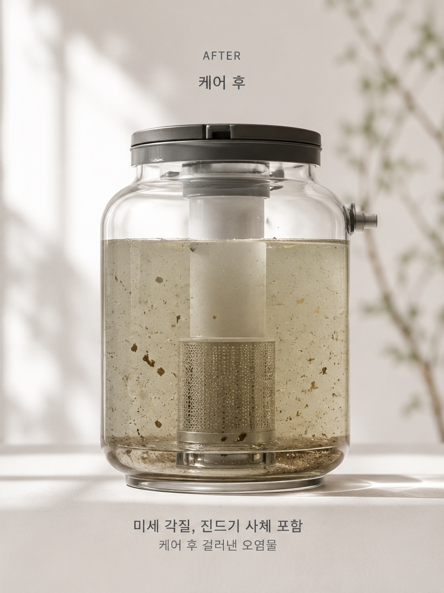

BEDROOM
매일 닿는 곳을먼저 봅니다.
하루의 시작과 끝을 함께하는 침실. 매일 몸이 닿는 공간의 상태부터 살펴봅니다.
BEDROOM
하루의 시작과 끝을 함께하는 침실. 매일 몸이 닿는 공간의 상태부터 살펴봅니다.
MOOHAE METHOD
CARE PROCESS
FEEL THE CHANGE
케어 전과 후의 모습을 좌우로 움직이며 직접 비교해보세요.

BEFORE
AFTER좌우로 드래그하여 변화를 확인해 보세요